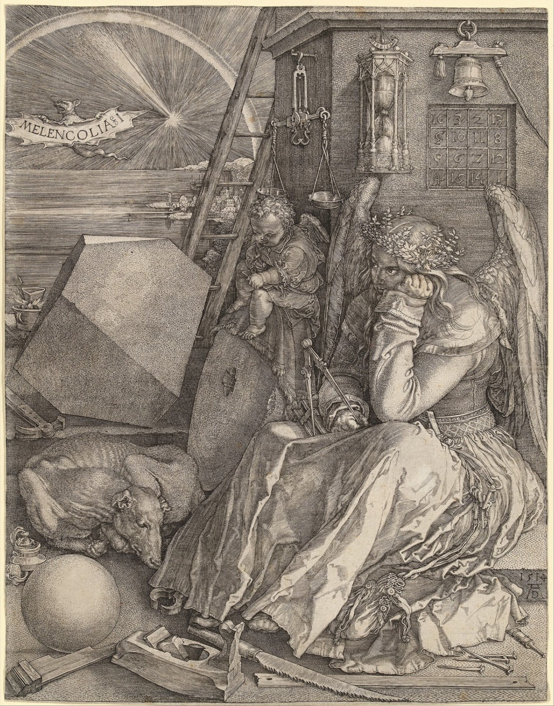

manuṣya
the human realm
"Tell me, what is it you plan to do
with your one wild and precious life?"
— Mary Oliver, The Summer Day

the shape of the trap
The epitome of the human realm is to be stuck in a huge traffic jam of discursive thought. You are so busy thinking that you cannot learn anything at all.
— Chögyam Trungpa, The Myth of Freedom
… the human realm concerned with the effort to possess experience, to find certainty in meaning, and to control the future through understanding and planning.
— Martin Lowenthal & Lar Short, Opening the Heart of Compassion
This is the human realm, the realm of passion and intellect. The monkey becomes more intelligent. He does not simply grasp; he explores, feels textures, compares things.
— Chögyam Trungpa, Cutting Through Spiritual Materialism
Humans suffer from the three fundamental types of suffering, and also from the four great streams of suffering: birth, old-age, sickness and death.
— Patrul Rinpoche, The Words of My Perfect Teacher
the precious birth
The Buddha said that it is more difficult for a being to obtain human birth than it would be for a turtle coming up from the depths of the ocean to put its head by chance through the opening of a wooden yoke tossed around by huge waves on the surface.
— Patrul Rinpoche, The Words of My Perfect Teacher
The human realm is said to contain the right mix of suffering and pleasure to lead to awakening
texture
speech
This Is Water — David Foster Wallace
… how to keep from going through your comfortable, prosperous, respectable adult life dead, unconscious, a slave to your head and to your natural default setting of being uniquely, completely, imperially alone day in and day out.
— Kenyon commencement address, 2005
film
Ikiru — dir. Akira Kurosawa, 1952
Life is brief — fall in love, maidens, before the crimson bloom fades from your lips …
— "Gondola no Uta," the song Watanabe sings on the swing
poem
The Guest House — Rumi (trans. Coleman Barks)
This being human is a guest house. Every morning a new arrival. … The dark thought, the shame, the malice, meet them at the door laughing, and invite them in.
— The Essential Rumi
song
Anthem — Leonard Cohen, 1992
dispatches
Via the community archive.
the humanities, properly conceived, are the development of the core competencies for navigating the human realm
(including and especially the ways that realm is driven by emotion, culture, historical accident & residue, pettiness, nobility, virtues & vices, delusions, wisdom…)
"First there is a mountain, then there is no mountain, then there is a mountain" means once you've spent enough time in pre-ontology to learn to dance with it, it's time to shut the hell up about "there is no self" and "reality is an illusion" and come home to the human realm
human realm. gotta be one of my favorite realms
the door
Start close in, don't take the second step or the third, start with the first thing close in, the step you don't want to take.
— David Whyte, Start Close In
Mind precedes all mental states. Mind is their chief; they are all mind-wrought.
— Dhammapada, verse 1 (trans. Buddharakkhita)
The end of ignorance and the joy of understanding resides in the human realm. Bodhi swaha.
even here, a buddha
In the human realm the awakened one is Shakyamuni himself, carrying a begging bowl and a staff — a traveler's tools.
The gates are not locked.
☸ the six realms · may all beings be free